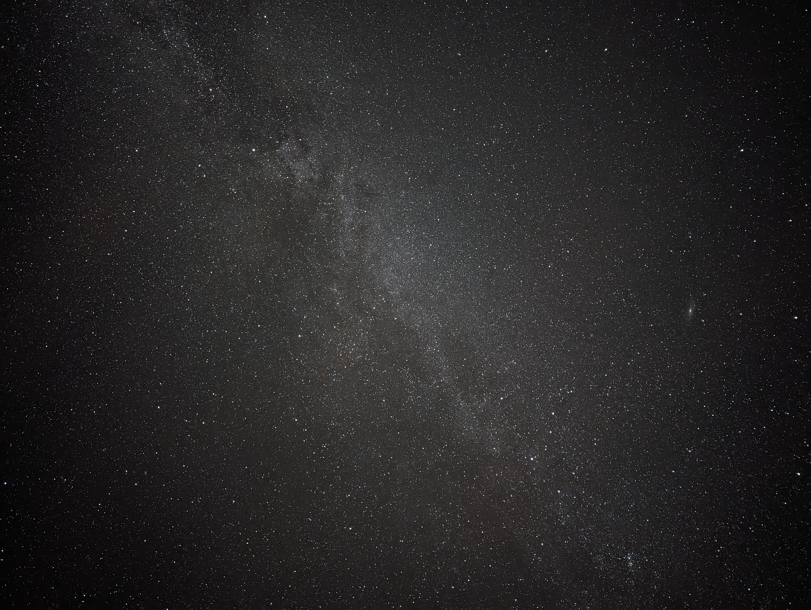
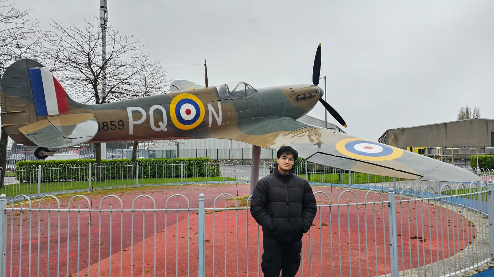
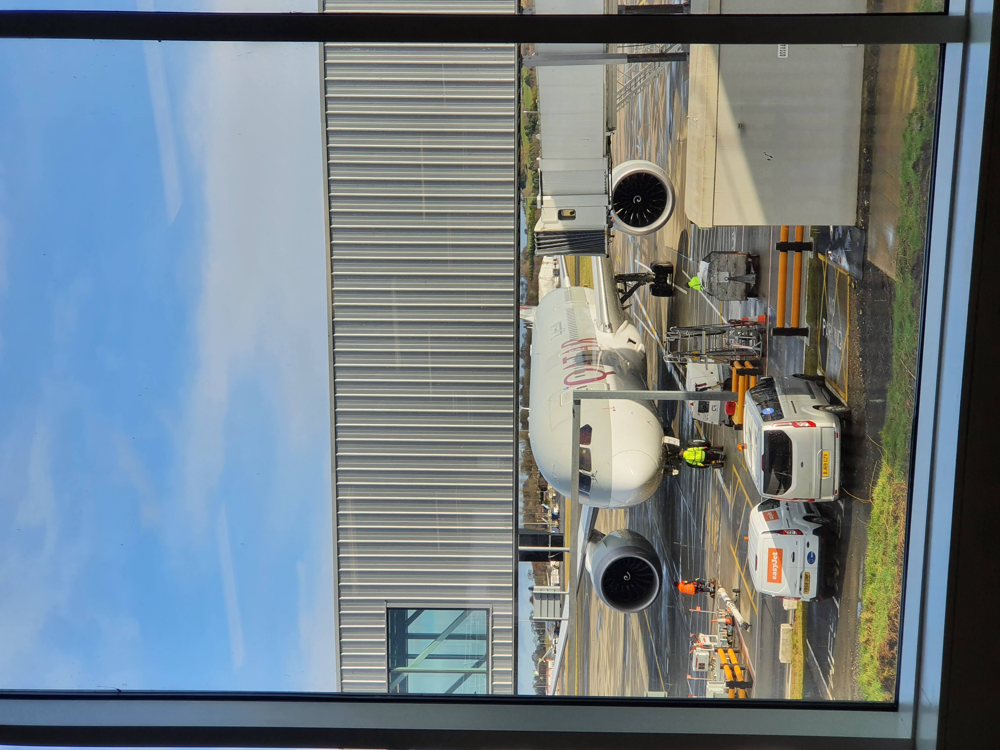
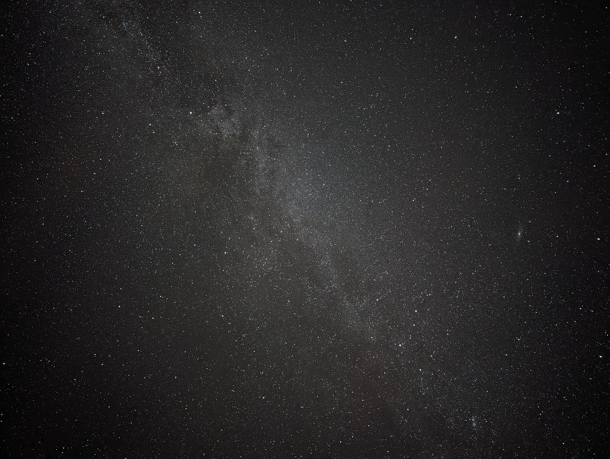
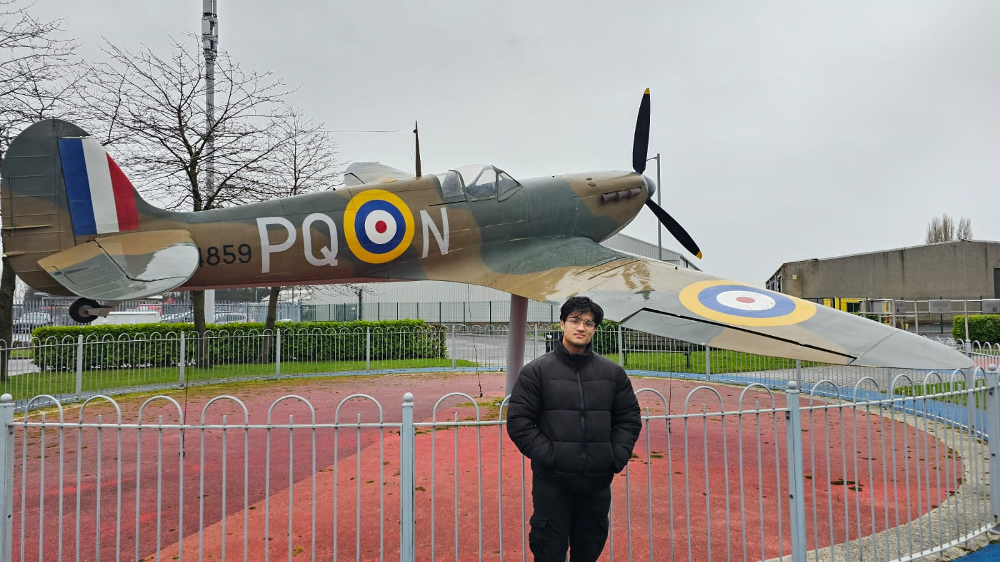
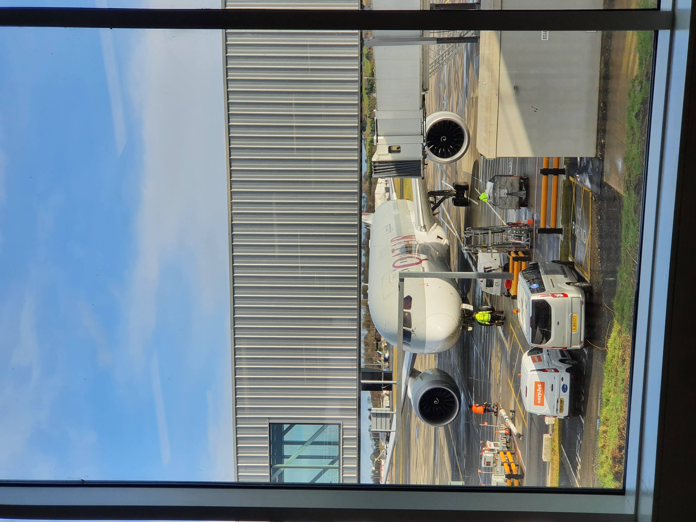

About Me
My name is Nayeem Sultan. I was born in Austria with Bangladeshi ethincity and I have an unhealthy obsession with Aerospace and Tech.
I've always had a fascination to Space and Tech. Starting when I was introduced to Science youtubers such as Vsauce and Kurzegesagt and started researching on Astronomy.
I originally dreamt of becoming an Astronomer. However, over the years I slowly came to realise that the idea of studying stars didnt resonate with me much and I loved building and designing things.
I was also obsessed with Aviation and put 2 and 2 together to figure out that I wanted to pursure Aerospace.
I take pride in the hobbies that I do.
Some of my hobbies are:
- Planespotting
- Arduino, Electronics and Programming
- Bass and Acoustic Guitar
- Walks and hikes
- Gym
- Fashion
 





My most dedicated and profound interest is definitely Aviation and Space.
It started from when I was a kid and my passion for it has never dwindled over the years. I would always update my friends, family and teachers about the daily space news and have spent countless hours watching documentaries on space.
I love watching planes fly by my house and even right over me when at the beach. I wish to do planespotting with my friends and other Avgeeks.
If the nightsky is at the right condition, I also love taking starry night photos such as the one on the top right. I absolutely adore Aviation and Space and I wish to share my love and expand on my passion for the future.
From September 2021 - April 2024, I was in the ACF and would go to every week.
Within my time in the ACF, I underwent many exercises, fun activities and training that still carries on in my daily life.
Cadets is undoubtedly one of my most favourite experiences to do and I am proud to have been apart of that community. It holds a strong place in my heart and I have created great bonds from all around Scotland because of it.
By the end of my term, my abilities were recognised by all instructors and I earned my "Lance Corporal" rank and many other achievements.
A detailed showcase of my time in cadets is shown in the "Experiences" page of this website.
I currently play both Bass and Acoustic guitar in Fingerstyle.
I was taught Bass by my Music and Guitar teacher while I am self taught in Acoustic.
In school I would take Bass lessons every week and would regularly come in lunch to play Acoustic in my school's Guitar Ensemble.
Towards the end of High School, I did my final performance with the Ensemble for our school's Christmas Concert, shown in the picture on the bottom-left.
I am able to play songs such as "Just the two of us" and "Payphone" as a Fingerstyle cover.